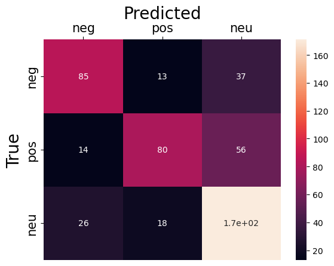

Code
# import packages
import pandas as pd
import numpy as np
import matplotlib.pyplot as plt
import seaborn as snsNaive Bayes is a supervised learning algorithm used for classification tasks. Based on the naive bayes theorem, naive bayes uses features to make a prediction on a target variable. The key difference is that naive bayes assumes that features are independent of each other and there is no correlation between features().
In this part, we will apply the Naive Bayes Classifier on text data that we collected from Twitter to identify the sentiment of each tweet.
The dataset we are going to use for this section consists of 5 columns (Date, Language, Text, clean_text and tone) and 2500 rows. We are going to choose column “Text” and column “Tone”, and apply Naive Bayes classification to classify the tone of each Text.
# import packages
import pandas as pd
import numpy as np
import matplotlib.pyplot as plt
import seaborn as sns#read the dataset
df=pd.read_csv("clean_tweet_tone_df.csv")
#drop the dummy column
df.drop('Unnamed: 0',axis=1)| Date | Language | Text | clean_text | tone | |
|---|---|---|---|---|---|
| 0 | 2022-09-11 22:22:28+00:00 | en | All the medical pain and all the taxes spent p... | medical pain taxes spent putting people jail s... | -0.9531 |
| 1 | 2022-09-11 22:21:26+00:00 | en | A good way to clean up your follower list is t... | good way clean follower list app called see fo... | 0.9184 |
| 2 | 2022-09-11 22:12:16+00:00 | en | @1zzyzyx1 @MeidasTouch @CharlieCrist legalize ... | legalize marijuana remove barriers desantis p... | -0.4404 |
| 3 | 2022-09-11 22:11:15+00:00 | en | RT @snoopdoggslungz: 📸 Chem D\n🌱(ig) https://t... | rt chem d ig | 0.0000 |
| 4 | 2022-09-11 22:06:53+00:00 | en | @BabzOnTheMic Off the weed bro. That’s 4 strai... | weed bro thats straight losses miami pats lon... | -0.6369 |
| ... | ... | ... | ... | ... | ... |
| 2495 | 2022-09-07 21:20:14+00:00 | en | I just caught someone smoking their weed pen i... | caught someone smoking weed pen class hahahaha... | 0.4019 |
| 2496 | 2022-09-07 21:17:48+00:00 | en | @AesPolitics And research shows black and brow... | research shows black brown people disproporti... | 0.0000 |
| 2497 | 2022-09-07 21:17:39+00:00 | en | Smoke weed “ your not responsible and mentally... | smoke weed responsible mentally sick sober ser... | -0.8625 |
| 2498 | 2022-09-07 21:09:58+00:00 | en | People who call weed, cannabis. https://t.co/m... | people call weed cannabis | 0.0000 |
| 2499 | 2022-09-07 21:09:43+00:00 | en | You were coughing when you hit my weed, but I’... | coughing hit weed ive never seen feel free | -0.4023 |
2500 rows × 5 columns
df=df[["clean_text","tone"]]
df| clean_text | tone | |
|---|---|---|
| 0 | medical pain taxes spent putting people jail s... | -0.9531 |
| 1 | good way clean follower list app called see fo... | 0.9184 |
| 2 | legalize marijuana remove barriers desantis p... | -0.4404 |
| 3 | rt chem d ig | 0.0000 |
| 4 | weed bro thats straight losses miami pats lon... | -0.6369 |
| ... | ... | ... |
| 2495 | caught someone smoking weed pen class hahahaha... | 0.4019 |
| 2496 | research shows black brown people disproporti... | 0.0000 |
| 2497 | smoke weed responsible mentally sick sober ser... | -0.8625 |
| 2498 | people call weed cannabis | 0.0000 |
| 2499 | coughing hit weed ive never seen feel free | -0.4023 |
2500 rows × 2 columns
df['tone']=df['tone'].apply(lambda x: 0 if x == 0 else (1 if x>0 else -1) )
df| clean_text | tone | |
|---|---|---|
| 0 | medical pain taxes spent putting people jail s... | -1 |
| 1 | good way clean follower list app called see fo... | 1 |
| 2 | legalize marijuana remove barriers desantis p... | -1 |
| 3 | rt chem d ig | 0 |
| 4 | weed bro thats straight losses miami pats lon... | -1 |
| ... | ... | ... |
| 2495 | caught someone smoking weed pen class hahahaha... | 1 |
| 2496 | research shows black brown people disproporti... | 0 |
| 2497 | smoke weed responsible mentally sick sober ser... | -1 |
| 2498 | people call weed cannabis | 0 |
| 2499 | coughing hit weed ive never seen feel free | -1 |
2500 rows × 2 columns
In this we will transform the dataset into another format so the machine can understand the dataset and ‘learn’ how to recognize the sentiment of each input tweets.
Text Vectorization is the process of converting text into numerical representation. Here, we used a tool called CountVectorizer from Python Sklearns library. It can count the frequency of each word and use the frequency as the features.
# set up the lemmanization
from nltk import word_tokenize
from nltk.stem import WordNetLemmatizer
class LemmaTokenizer(object):
def __init__(self):
self.wnl = WordNetLemmatizer()
def __call__(self, articles):
return [self.wnl.lemmatize(t) for t in word_tokenize(articles)]# Tokenize the text
from sklearn.feature_extraction.text import CountVectorizer
corpus=df['clean_text']
vectorizer = CountVectorizer(stop_words='english' ,lowercase=True)
X = vectorizer.fit_transform(corpus)
print(vectorizer.get_feature_names_out()[:50])
print(X.toarray()[:20])
print("the shape of the matrix is ",X.toarray().shape)['aahn' 'aaron' 'ab' 'abc' 'ability' 'able' 'abolished' 'abolitionism'
'abortion' 'abortions' 'abroad' 'absolute' 'absolutely' 'abt' 'abundance'
'abuse' 'abusers' 'accept' 'acceptable' 'accepted' 'accepts' 'access'
'accessory' 'accident' 'accomplished' 'according' 'account' 'accountant'
'accounts' 'accretive' 'accumulate' 'accurately' 'accustomed' 'ace'
'achieved' 'achievement' 'achievements' 'acid' 'acquiring' 'acquisition'
'acre' 'acres' 'acro' 'act' 'acted' 'acting' 'action' 'actions' 'active'
'activist']
[[0 0 0 ... 0 0 0]
[0 0 0 ... 0 0 0]
[0 0 0 ... 0 0 0]
...
[0 0 0 ... 0 0 0]
[0 0 0 ... 0 0 0]
[0 0 0 ... 0 0 0]]
the shape of the matrix is (2500, 6345)We split the dataset into two parts. One part is used for train the model and another part is used for testing the model performance
We are performing a train test split on our dataset. We are providing the test size as 0.20, that means our training sample contains 2000 training set and test sample contains 500 test set
# split the data into training set and test set
from sklearn.model_selection import train_test_split
from sklearn.pipeline import make_pipeline
from sklearn.feature_extraction.text import TfidfVectorizer
x_train,x_test,y_train,y_test=train_test_split(X,df['tone'],test_size=0.2)
print("X_train.shape",x_train.shape)
print("y_train.shape",y_train.shape)
print("X_test.shape",x_test.shape)
print("y_test.shape",y_test.shape)X_train.shape (2000, 6345)
y_train.shape (2000,)
X_test.shape (500, 6345)
y_test.shape (500,)Now it is time to apply the Naive Bayes Classification
# train the model
from sklearn.naive_bayes import MultinomialNB
clf = MultinomialNB(alpha=1)
clf.fit(x_train, y_train)MultinomialNB(alpha=1)In a Jupyter environment, please rerun this cell to show the HTML representation or trust the notebook.
MultinomialNB(alpha=1)
#print the accuracy for training set and test set
print("ACCURACY CALCULATION")
print("TRAINING SET:")
yp_train=clf.predict(x_train)
train_total=len(y_train)
wrong_train=np.count_nonzero(yp_train-y_train)
print("Accuracy:",100-(wrong_train/train_total)*100)
print("Number of mislabeled points out of a total 2000 points = ",wrong_train)
print()
print("TEST SET:")
yp_test=clf.predict(x_test)
test_total=len(y_test)
wrong_test=np.count_nonzero(yp_test-y_test)
print("Accuracy:",100-(wrong_test/test_total)*100)
print("Number of mislabeled points out of a total 500 points = ",wrong_test)
ACCURACY CALCULATION
TRAINING SET:
Accuracy: 91.15
Number of mislabeled points out of a total 2000 points = 177
TEST SET:
Accuracy: 67.19999999999999
Number of mislabeled points out of a total 500 points = 164As we can see above, the accuracy of train data is 91.15% and we got 177 mislabeled text out of a total 2000 text
For the test data, we only got 67.2% accuracy and there are 164 mislabeled text out of a total 500 text
#plot the confusion matrix
from sklearn.metrics import confusion_matrix
ax= plt.subplot()
conf_mat = confusion_matrix(
y_test, yp_test)
sns.heatmap(conf_mat, annot=True)
ax.set_xlabel('Predicted', fontsize=20)
ax.xaxis.set_label_position('top')
ax.xaxis.set_ticklabels(['neg', 'pos','neu'], fontsize = 15)
ax.xaxis.tick_top()
ax.set_ylabel('True', fontsize=20)
ax.yaxis.set_ticklabels(['neg', 'pos','neu'], fontsize = 15)
plt.show()